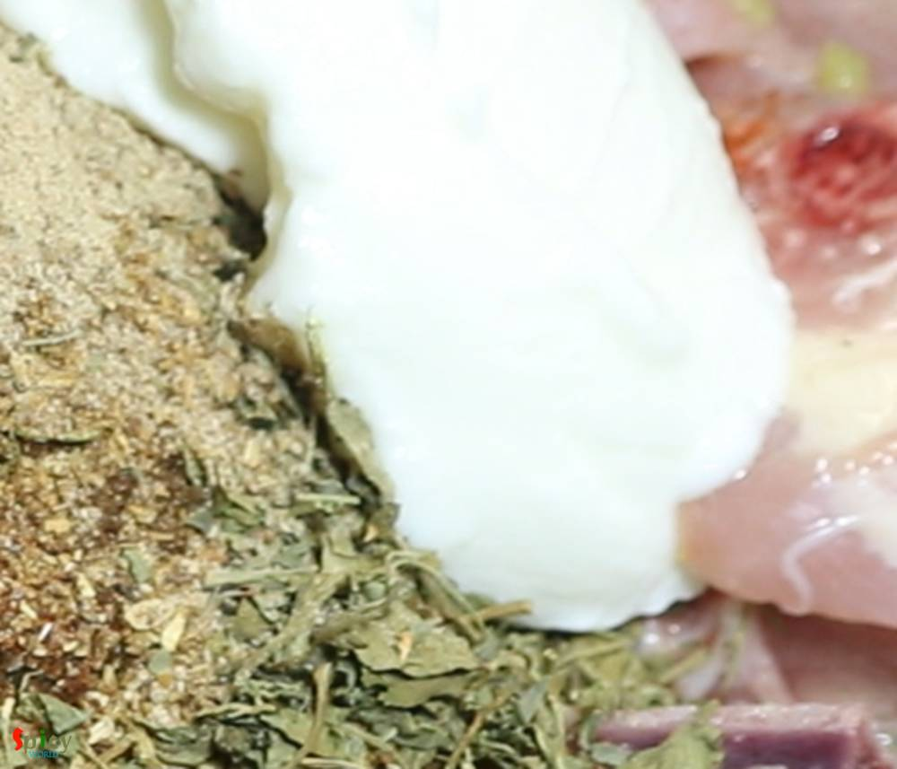
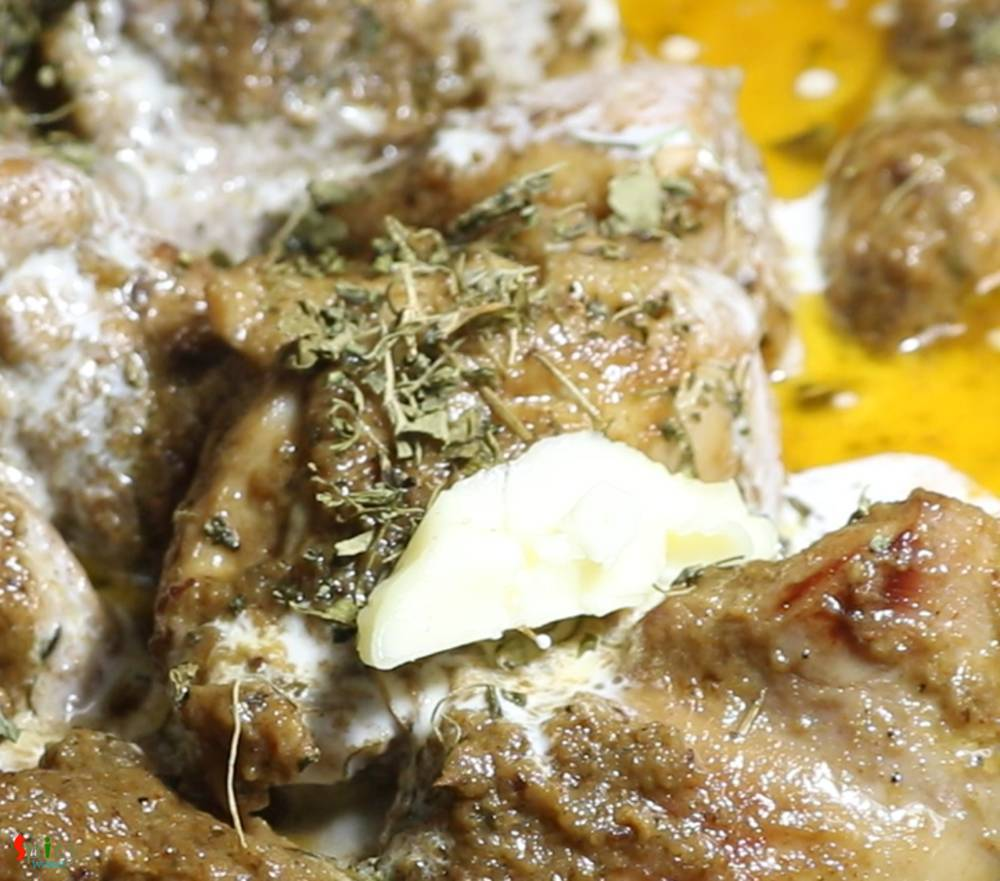

Simple and Easy Recipes
Afghani Chicken Curry
© 2016 Spicy World, Published on: Mar 29, 2019
Afghani Chicken Curry is a very flavorful main course recipe in which marinated chicken will be first shallow fried until dark brown then cooked in a thick onion based gravy. I have learnt the recipe from my friend Ankita. The Afghani chicken tastes best with plain chapati or naan or light pulao. Try this recipe in your kitchen and let me know how it turned out for you.

Ingredients
- 700 grams of chicken.
- 3 Tablespoons of yogurt.
- Salt as per your taste.
- Spice powder 1 Teaspoon of each (red chili powder, black pepper powder, garam masala powder, kasuri methi).
- 2 - 3 Tablespoons of chaat masala.
- 1 medium onion, roughly chopped.
- 2 inches ginger.
- 7-8 cloves of garlic.
- 2-3 green chilies, chopped.
- Paste of 4-5 cashews.
- 3 Tablespoons of fresh heavy cream.
- 1 Teaspoon of butter.
- 5-6 Tablespoons of cooking oil.
- A handful of coriander leaves with stem.
- A cup of hot water.


Steps
Make a smooth paste out of onion, coriander leaves, ginger, garlic, green chilies and little water.
Marinate the chicken with half of that paste.
Also add salt, black pepper powder, red chili powder.
Add garam masala powder, kasuri methi and 2-3 Tablespoons of chaat masala.
Then add yogurt, mix everything very well.
Keep it in refrigerator for 4 hours or overnight.
Heat oil in a non stick pan.
Add the marinated chicken and fry on high flame for 10-12 minutes.
When chicken will become brown in color, remove them from oil.
In that remaining oil, add 2-3 Tablespoons of more oil.
Add the remaining onion paste. Cook on medium flame for 15 minutes.
Then add cashew nut paste, mix well and cook for another 10 minutes.
Add some salt as per your taste, mix well.
Then add fried chicken, mix well with the masala.
Add a cup of hot water. Mix well, cover the pan and cook until the chicken becomes soft.
Lastly add some more kasuri methi, heavy cream and butter. Mix well and turn off the heat.
Let the curry rest for 15-20 minutes, then serve.
Your Afghani Chicken Curry is ready to serve.
Serve this hot with chapati, naan or rice.
")